01-Git-2.32.0-64-bit.exe 02-TortoiseGit-2.12.0.0-64bit.msi 03-TortoiseGit-LanguagePack-2.12.0.0-64bit-zh_CN.msi
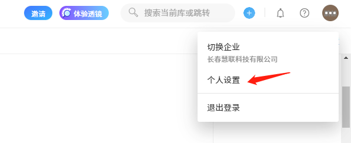
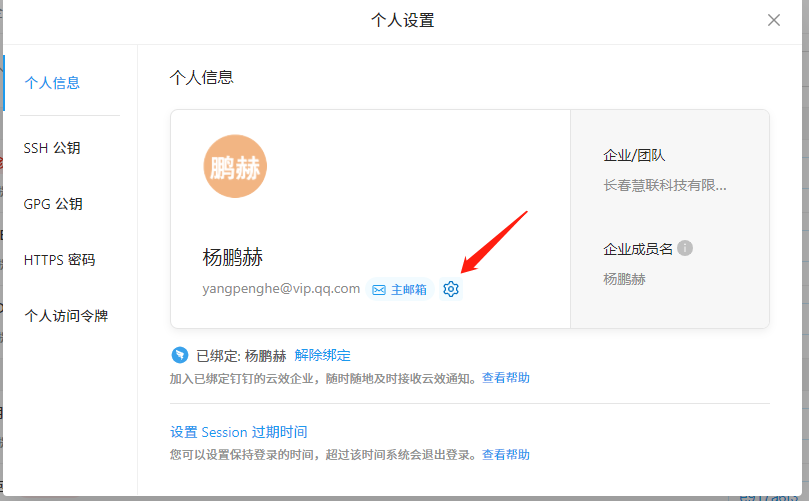
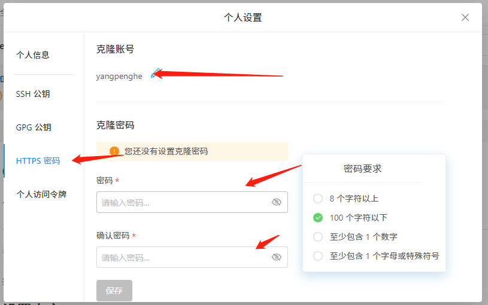
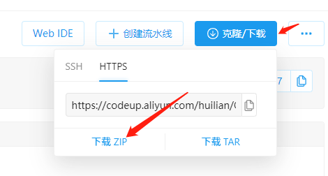
挂载(或解压)源码版本控制环境包.iso文件 按照01-02-03顺序安装
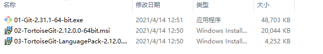
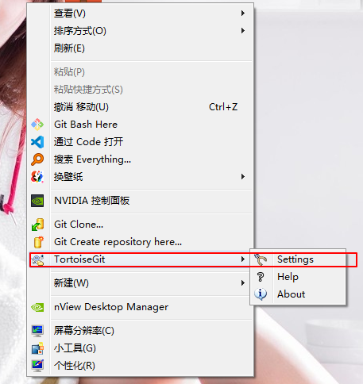
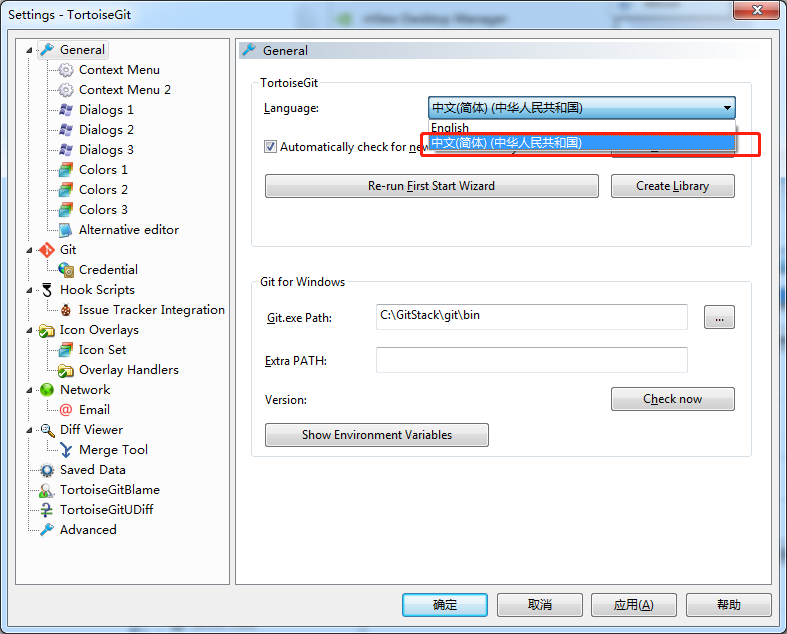
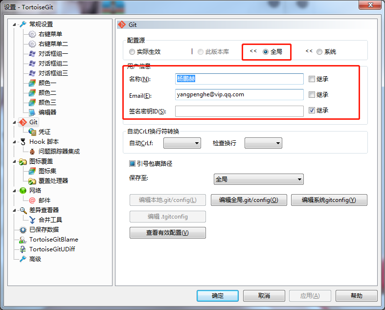
打开 Git Bash
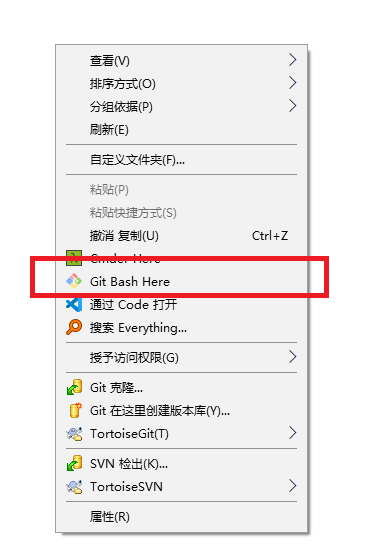
git config --global credential.helper store
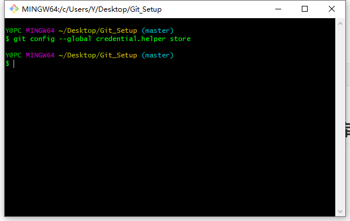
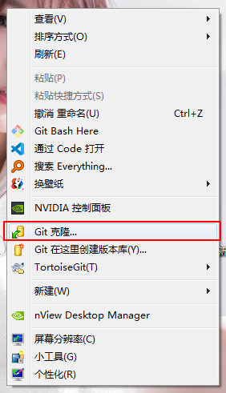
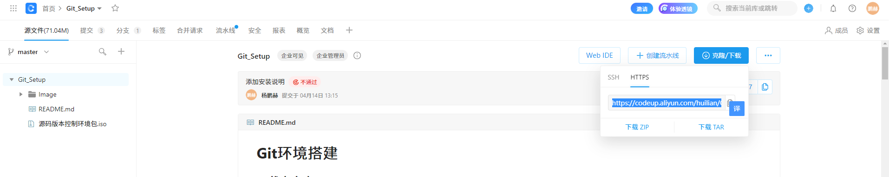
https://codeup.aliyun.com/huilian/Git_Setup.git
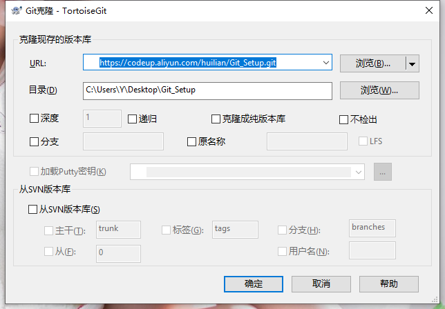
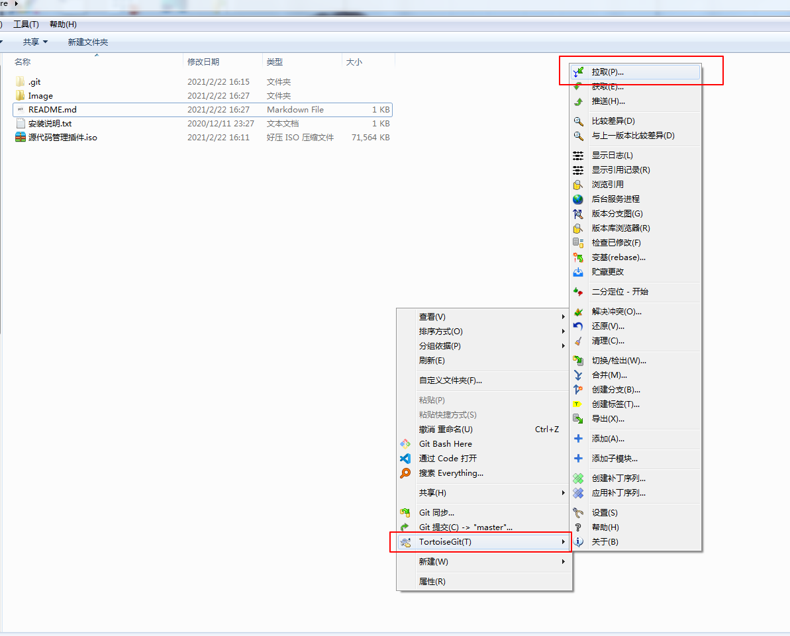
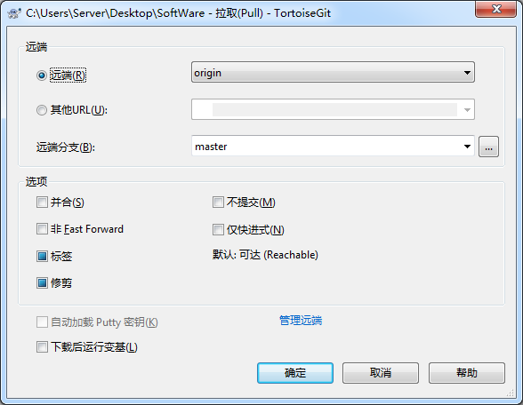
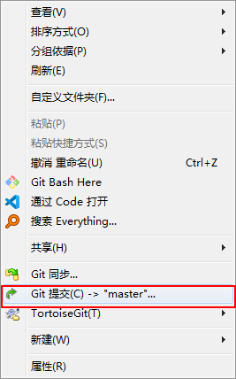
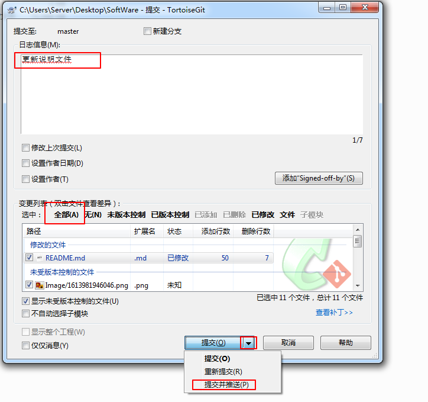
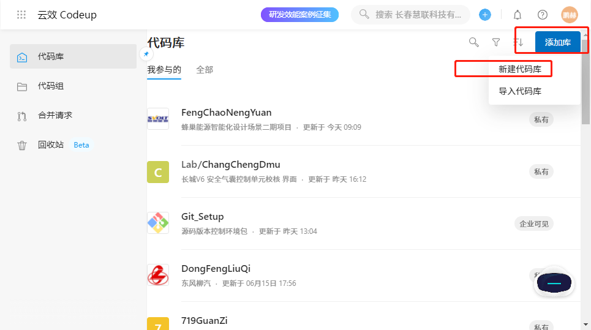
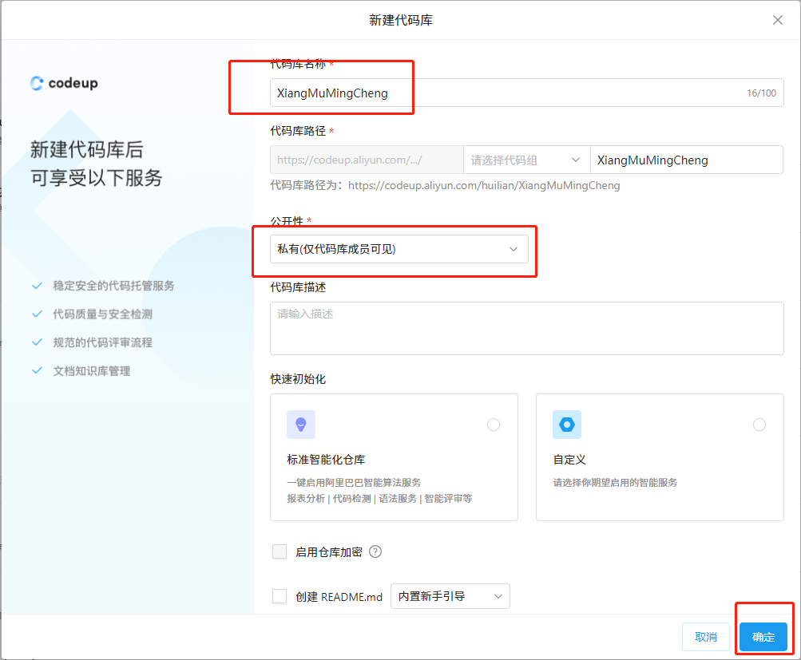
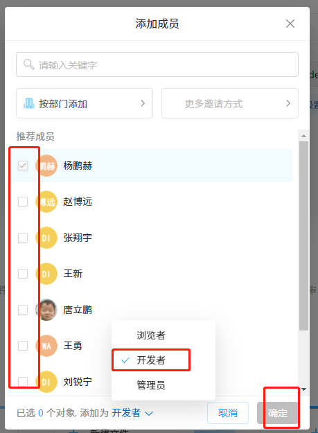
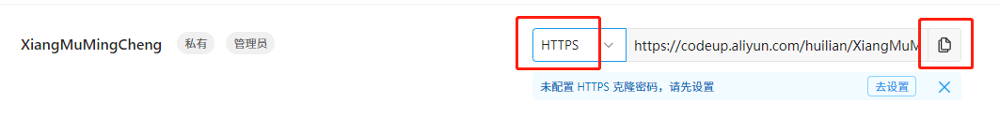
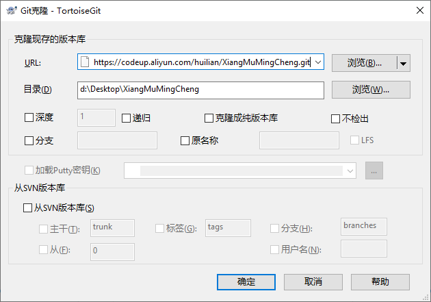
克隆之后将要添加的项目文件 和 本项目的 .gitignore 文件 放入克隆文件夹内
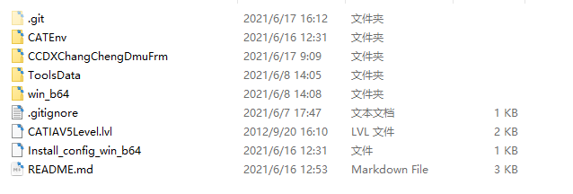
之后右键提交推送